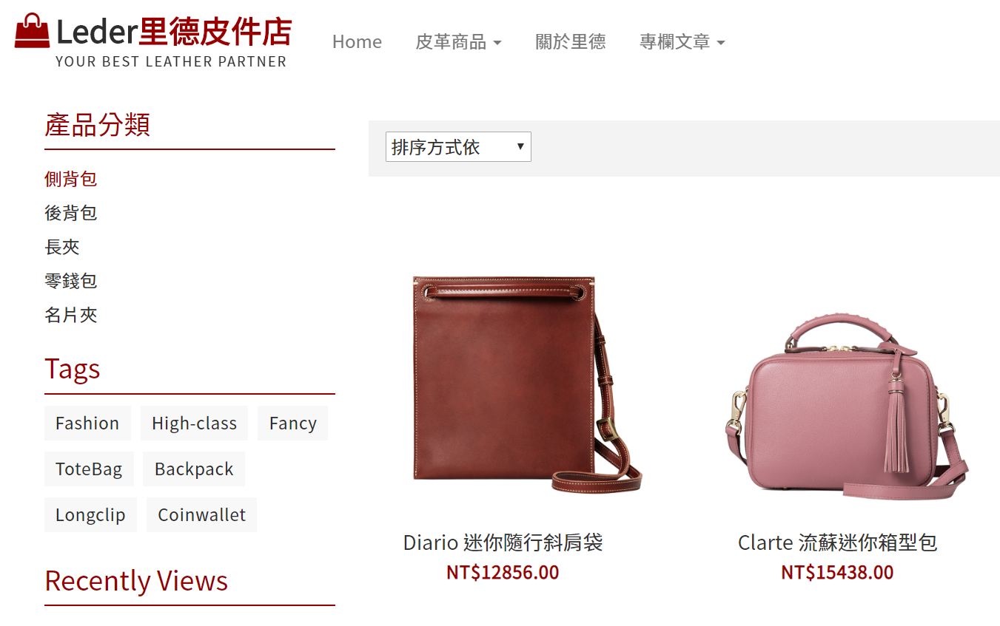
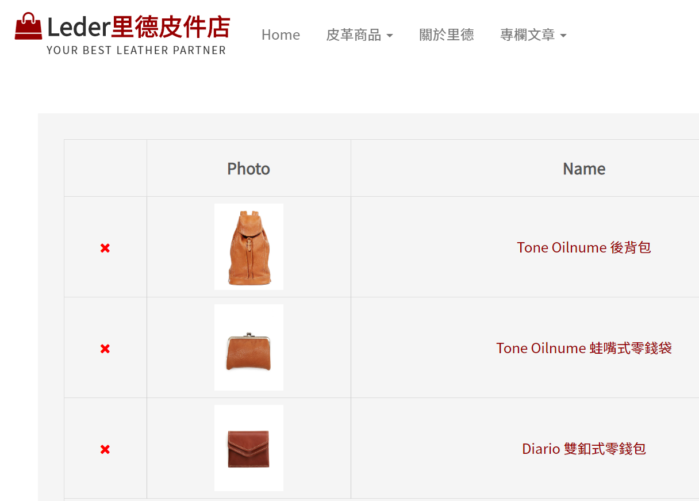
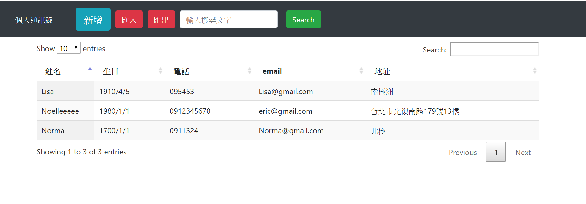
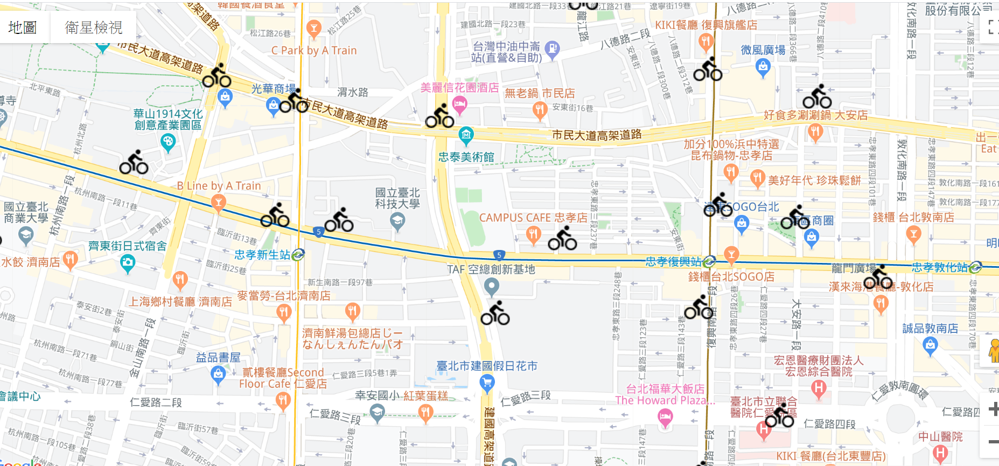
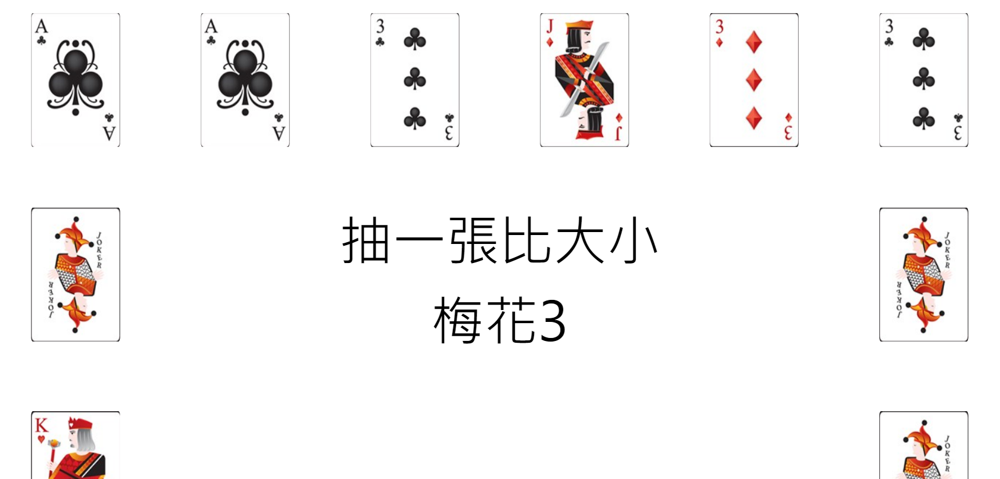
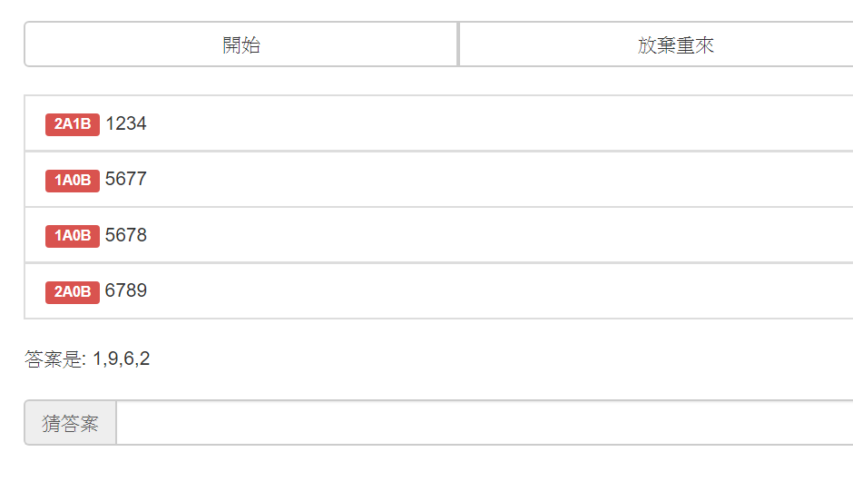
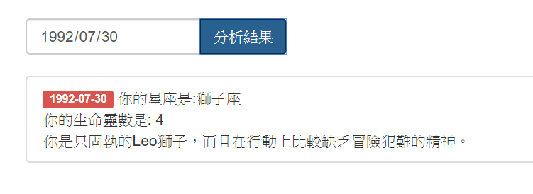
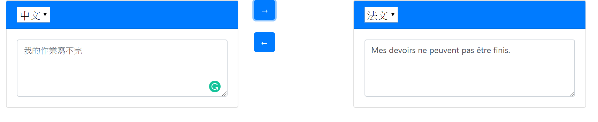

與他人合作電商網站:里德皮件店
http://ledershop.azurewebsites.net/
我負責的部分
產品頁面
用ajax動態切換分頁、切換產品類別與切換排序方式

願望清單
用ajax呼叫Controller方法，讓客戶每新增一個願望清單，就存在Session

專欄文章
運用Html與bootstrap切版

具備CRUD功能通訊錄
https://indexabcd.azurewebsites.net/directory(original).html
運用技術:
1. JSON.stringify()與JSON.parse()應用，讓使用者可以匯入、匯出JSON
2. 運用localStorage 存取預設資料
3. dat.splice 刪除當下點到該筆資料

Ubike串接Google Map
https://indexabcd.azurewebsites.net/Google.Map.html
運用技術:
1. 取得臺北市政府開放資料
2. 串接第三方API

撲克牌比大小
https://indexabcd.azurewebsites.net/CardPick.html
運用技術:
1. Javascript弱型別可直接設定屬性，做出 Cards[i].data屬性抓圖片路徑
2. Array的push()方法增加陣列元素，並回傳新長度
3. CSS 運用transition讓陰影消失動作放慢

猜數字遊戲
https://indexabcd.azurewebsites.net/GuessNumber.html
運用技術:
1. 用 Javascript 生成四個不重複的隨機數字， 用聯集與交集概念比對「同數字」(A)有幾個，比對「同數字同位置」(B)有幾個
2. array.filter 排除陣列的空值

星座測驗
https://indexabcd.azurewebsites.net/LifeNumber.html
運用技術:
1. ajax方法抓後端星座詳細資料
2. Javacript 抓取生日的數值，判斷星座
3. 運用concat與parseInt把生日數值相加，算出生命靈數

Google多語雙向翻譯
https://indexabcd.azurewebsites.net/MrsGoogle.html
運用技術:
1. 閱讀API參考文件，取得金鑰
2. 非同步呼叫方法ajax
3. 利用locatStorage讓textarea出現我上次輸入的內容
4. 將ajax方法的url貼到postman 測試回傳結果